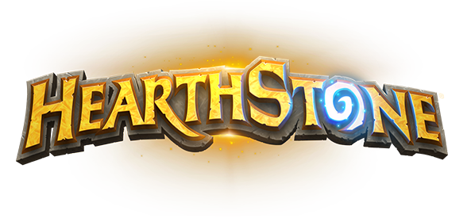

Я дуже полюбляю ігри, тому частину свого вільного часу витрачаю на них.
Список ігр в які я граю найчастіше:
- Dota 2
- Mobile Legends:Bang Bang
- Hearthstone
 |
Багатокористувацька відеогра в піджанрі MOBA, автономне продовження ідей карти DotA для гри Warcraft III: Reign of Chaos і її модифікації Warcraft III: The Frozen Throne. Dota 2 випущена компанією Valve Corporation для платформи Microsoft Windows в публічній бета-версії у 2011 році. Для OS X та Linux гру було випущено 18 липня 2013 року. Спочатку Dota 2 використовувала ігровий рушій Source, а в 2015 році була портована на Source 2. Dota 2 була першою грою, яка використовувала цей ігровий рушій. Dota 2 розповсюджується та підтримується ексклюзивно сервісом Steam. |
 |
Це мобільна багатокористувацька онлайн-арена бою (MOBA), розроблена та опублікована Moonton, дочірньою компанією ByteDance. Випущена в 2016 році, гра стала популярною в Південно-Східній Азії і була серед ігор, обраних для першого медального змагання з еспорту на Іграх Південно-Східної Азії 2019 на Філіппінах.
У липні 2018 року компанія Tencent (яка також розробляла подібні ігри, Arena of Valor) від імені Riot Games виграла позов у проміжному народному суді Шанхаю проти генерального директора Moonton Ватсона Сю Чженхуа (оскільки він раніше працював у Tencent з одним із старших співробітників) за порушення закону про неконкурентні угоди, а також плагіат League of Legends від Mobile Legends, і йому було призначено виплату в розмірі 2,9 мільйона доларів. |
|  |
Колекційна карткова онлайн-гра створена по мотивам всесвіту Warcraft, розроблена компанією Blizzard Entertainment і поширюється по моделі free-to-play. Гра була випущена для персональних комп'ютерів 11 березня 2014 року. Пізніше була портована на платформи iOS та Android. Гра розповсюджується через Battle.net. Провідними геймдизайнерами були Ерік Додс і Бен Броуд.
Як і в інших колекційних карткових іграх, головною метою гравця в Hearthstone є збір власної карткової колекції, яка поповнюється шляхом купівлі комплектів карток або отримання їх як нагороди. Матчі між гравцями зводяться до розіграшу карт із завданням першим звести очки здоров'я опонента до нуля. Випуск нових карток здійснюється у вигляді великих доповнень або через завантаження чергового однокористувацького режиму «Пригоди». Кожне нове доповнення ґрунтується на регіоні чи окремій локації всесвіту Warcraft. |